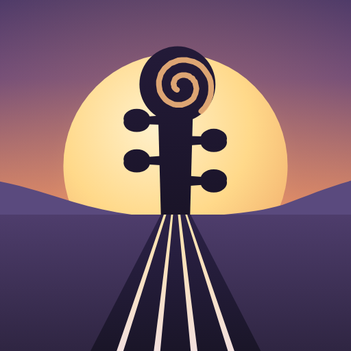

Violin Journey
тренажёр интонации для скрипки · an intonation trainer for the violin
Поставьте телефон на пюпитр и играйте: весь экран окрашивается в цвет попадания — зелёный, когда вы в строе, янтарный, когда чуть мимо, красный, когда далеко. Цвет видно боковым зрением, а во время игры ничего не надо нажимать.
- Live и настройка четырёх струн
- занятия: таймер, календарь, серия дней, уровни
- репертуар: произведения, гаммы, этюды, ноты и заметки
- дубли со звуком и видео, разбор по нотам, обработка звука
- путешествие по концертным залам мира и свой дом — за такты, которые приносят занятия
Put your phone on the music stand and play: the whole screen takes the colour of your pitch — green when you're in tune, amber when slightly off, red when off. You see the colour from the corner of your eye, and nothing needs a tap while you play.
- Live and tuning the four strings
- practice: timer, calendar, day streak, levels
- repertoire: pieces, scales, études, sheet music and notes
- audio and video takes, note-by-note analysis, sound processing
- a journey through the world's concert halls and a home of your own — paid in the bars your practice earns